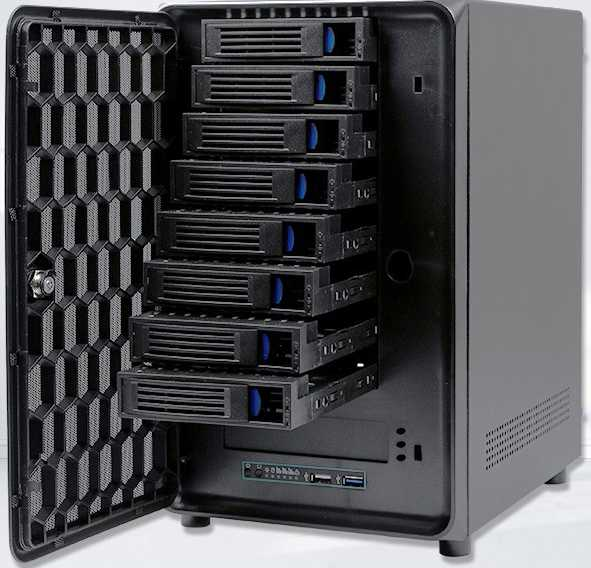

智能家居硬件采购避坑指要(四) HA盒子
HA是跑在PC上还是盒子里,这是个问题!
- PC性能远远强于盒子: CPU主频高(至少都是2G以上)核心多(8-16Cores),内存足(16G-64G),硬盘大
- PC的功耗也远高于盒子,盒子功耗低
因此如果不在乎功耗和硬盘损耗,以及能够保持24小时开机(不能离线),无脑PC即可.
PC的问题
简单提下我用PC碰到的问题,主要是RAM的问题, 常规 RAM 不支持 ECC 校验, 如果关键地址出错,导致系统崩溃,而有些文件系统严重依赖RAM的稳定性,比如ZFS(可组ZFS软阵列),如果RAM出错就会导致文件系统数据错误.

而我,家里的NAS早就不是24小时开机了,而是按需开机. 我也不想家里PC24小时保持开机, 所以需要盒子作为智能中枢.
HA盒子
HA盒子要求
- HA要想跑在docker中，那么CPU核心数量不能少，除非是只跑HA Core,那么单核也可，否则建议4核，主频不要低于1GHz.
- 如果HA要接入摄像头,最好至少要支持H.264硬解.
- 要储存更多的传感器历史数据,那么至少要支持USB3.0的接口或TF卡插槽方便扩展存储,
- 选择至少3A以上的靠谱电源以便带动移动硬盘
- 如果更进一步想支持离线AI人脸识别,AI语音识别和AI TTS,最好带够NPU(神经网络处理器)芯片
HA盒子选型与比较
PC没啥说的,盒子的明堂不少.我买过的盒子:作为机顶盒，路由器，硬盘盒…:
- CubieTruck Box: Allwinner A20(双核) 1Ghz, 2GiB DDR3 480MHz, 8G NAND(支持内置2.5硬盘)
- NanoPC T4 Box: RK3399, 内存 双通道4GB LPDDR3-1866, 16GB eMMC 5.1 Flash, Bluetooth 4.1 双频Wi-Fi蓝牙模块, 2x2 MIMO, 2xUSB3.0(1xTypeC),2xUsb2.0, 1xPcieX4(M.2 M-Key), 40PinGPIO, microSD(TF卡)插槽
- RK3399:
- CPU: 双Cortex-A72大核(up to 2.0GHz)+四Cortex-A53小核结构(up to 1.5GHz),
- GPU: Mali-T864 GPU(4核 900MHz), 支持OpenGL ES1.1/2.0/3.0/3.1, OpenCL, DX11, 支持AFBC（帧缓冲压缩）
- VPU: 支持4K VP9 and 4K 10bits H265/H264 视频解码，高达60fps, 双VOP显示等视频编解码功能

- RK3399:
- NanoPi R4S: RK3399, 4GB LPDDR4, 2xUSB3
- HK1 Box: CPU Amlogic S905X3(4核A55 up tp 1.91 GHz), GPU G31 MP2（650 MHz，6内核）, 内存2G/4GB（DDR4，3200 MHz）, 闪存16G/32G eMMC, Wifi/Bluetooth 4.0, 1xUsb3.0, 1xUsb2.0, microSD(TF卡)插槽, SPDIF光纤音频接口, H.265硬解(8K支持)
- Rock5 Model B RK3588 16GB RAM 最新到的板子
- Quad-core ARM Cortex-A76 MPCore processor and quad-core ARM Cortex-A55 MPCore processor
- Embedded ARM Mali-G610 MP4 3D GPU
- The build-in NPU supports INT4/INT8/INT16/FP16 hybrid operation and computing power is up to 6TOPs


其中性能以及功能最好的盒子是NanoPC T4,我当年买成￥900（全套：主板+散热片+RTC+金属外壳+红外遥控），没想到现在单板都上千了。但是价格太贵了。性价比不划算，而且这个板子我已经再用了。于是参考官网推荐的 HomeAssistant Blue , 我选择了HK1 Box。
HK1 Box 与 HomeAssistant Blue 的硬件配置相当(CPU和eMMC稍逊)，HomeAssistant Blue的CPU是S922X(4核A73@2.4GHz+2核A53@1.9Hz), 我在某宝大概查了下 HomeAssistant Blue(Odroid N2+):32G eMMC闪存/4G内存的Odroid N2+单板+外壳价格就近1200￥。而HK1 Box原装的价格(4G内存/32G闪存)大约230￥左右。这个价位几乎是HomeAssistant Blue的五分之一了。功耗也低: 3-4.45W(不带移动硬盘).
HK1 Box 盒子的注意事项
- 质量参差不齐, 良品率不高(我买两个,退了三个),刷机后,多测试烤机,好处是当机顶盒,游戏机(EmuElec),小服务器都成,而且支持多重引导.
- 原装电源质量很差，最好换个质量好的: 电压5V，电流不小于3A，接口5.5*2.5兼容2.1，实在找不到也可以用国产电视盒的5V2A电源，或是5V2A手机充电头+USB转DC线，质量必须是过得去的才可以用。用原装电源的有人已烧了USB接口，有人烧了USB网卡，有人烧了移动硬盘，即使没烧的，也存在各种不稳定的情况。
- 原装散热是个问题,不改散热,上80度很轻松.改装大散热片后温度能压到60度,改了大散热片的
HK1 Box的价位大约在260￥左右(配3A电源),加了风扇能压到40度(冬天30度),加了风扇的HK1 Box价位大约在290￥(配3A电源),不过改装风扇后的如果对方不留意静电,就要烧EMMC,造成无法刷机. - 最近一次买的HK1 Box的新Android版本(20220222_0120)刷机麻烦,无法USB引导刷机,必须先线刷(插USB2.0口)回退到老版本,才能USB引导刷机.
- 查看版本号:按遥控器help键,拉到底,点
更新
- 查看版本号:按遥控器help键,拉到底,点
HA盒子未来
而官网正在众筹的HomeAssistant Yellow我并不喜欢，它作的是Raspberry Pi CM4的扩展板：内置Zigbee((Silicon Labs MGM210P)+M.2扩展插槽+千兆网口(可选的PoE支持)+Audio DAC，但是这个扩展板只能用在Raspberry Pi Compute Module 4上（要自备），而RaspberryPi CM4(4核A72@1.5Ghz)存在众所周知的诸多小问题,加上如今价格也翻倍,也就没啥性价比了，就生态圈还可以。
说实在的, 如果addon装得多, 可能4G内存都不够. DIY HA盒子都是追求性价比的. 同时这样也节能省电.
目前我盒子装的Addons有:
- TimescaleDB(PostgreSQL:TimeScaleDB+PostGis)
- Zigbee2MQTT
- Mosquitto broker
- VLC
- Logitech Media Server
- room-assistant
- Samba share
- 我自己写的中英文离线语音合成输出(TTS) Addon
- File editor(一般关闭)
- Check Home Assistant configuration(一般关闭)
- pgAdmin4(一般关闭)
- Node-RED(一般关闭,测试用)
- ESPHome(一般关闭)
我理想的HA盒子是有 8G/16G 内存的主板,带NPU(神经网络处理器)芯片,这样可以直接在智能中枢这块实现离线的AI语音识别/TTS/视频识别: Rock5 Model B RK3588.
HA 使用注意事项
这应该归到软件类的,不过这里也简单提一下吧.
- 不要直接拔电源，尽量按常规流程关机: 配置 -> 加载项、备份与Supervisor -> 系统 -> 关闭主机
- 否则可能会造成系统损坏，导致重装系统。如果使用
overlayfs文件系统，那么系统损坏的情况会得到一定的改善
- 否则可能会造成系统损坏，导致重装系统。如果使用
- 当传感器较多的时候，数据库数据膨胀很快，需要扩展存储和优化数据存储方式
- 扩展存储：插入256G/512G TF卡或移动硬盘
- 如果盒子性能还不错，那么直接上
TimescaleDB(PostgreSQL)，注意在配置里控制下CPU和内存的使用，比如HK1盒子。 - 如果盒子性能一般或者想节省磁盘空间，那么就上
MariaDB, 或者SQLite Mem+InfluxDB更省空间，不过这时，历史数据就只能在InfluxDB中查看了。